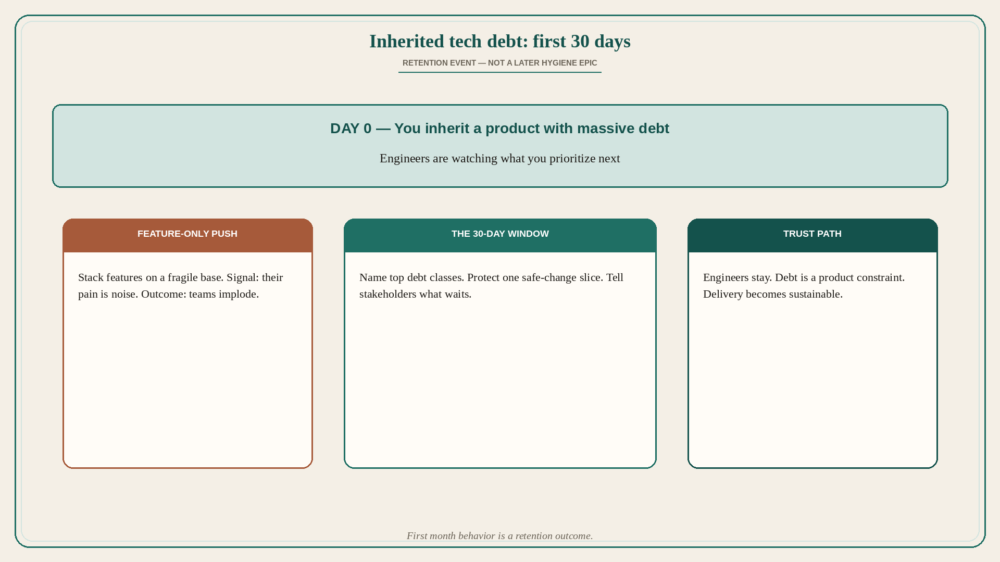

Inherited tech debt: your first 30 days decide if engineers stay
Source: George / prodmgmt.world (@nurijanian)
original post
What it claims
If you inherit a product with massive tech debt, your first 30 days will define whether your engineers stay or quit. The author has watched five engineering teams implode because their PMs made the same mistakes, and spent four years fixing such disasters. The visible claim: early PM behavior on inherited debt is a retention event, not a backlog hygiene item. The post teases “here’s what actually works,” but those steps are not in the returned note_tweet. (API returned only the hook text; the rest of the thread was not in note_tweet. Detailed steps are not invented here.)
Why it matters for a PO
A PO who inherits a brownfield product and immediately stacks feature pressure on a debt-laden codebase is running the implode pattern. The first month signals whether you see the engineers’ pain as the product constraint or as noise. Retention is a product outcome in that window.
3 takeaways
- Massive inherited tech debt: first 30 days decide if engineers stay or quit.
- PM mistakes in that window can implode teams; treat early behavior as retention-critical.
- Debt is not a later hygiene epic — it is the condition of the product you just took.
Practice this week
In week one on a debt-heavy product, sit with eng and list the top three debt classes that block safe change. Put one debt-reduction slice in the next increment before stacking a pure feature bet. Write one sentence to stakeholders: what we will not ship until X is safer.